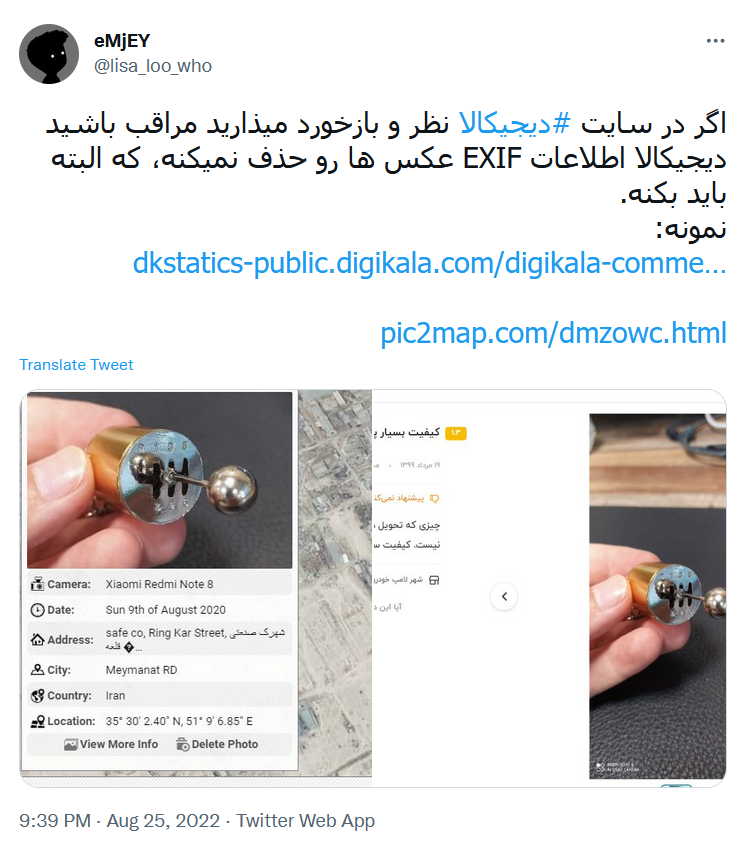
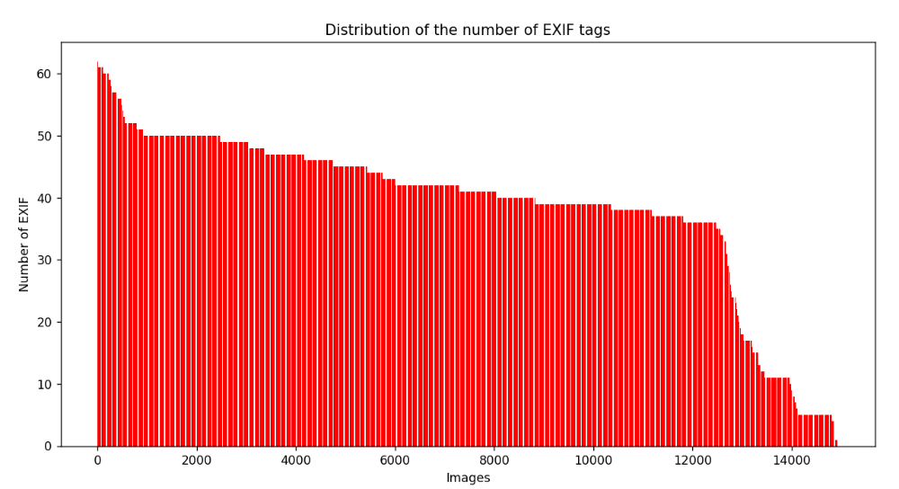
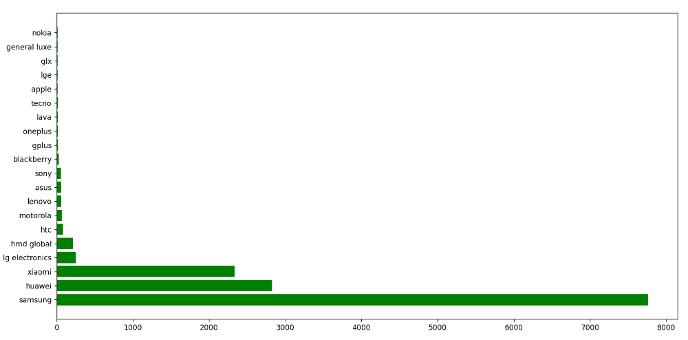
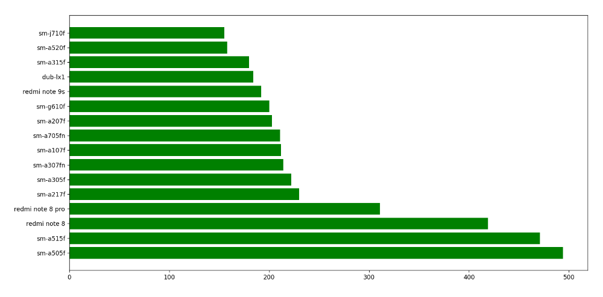
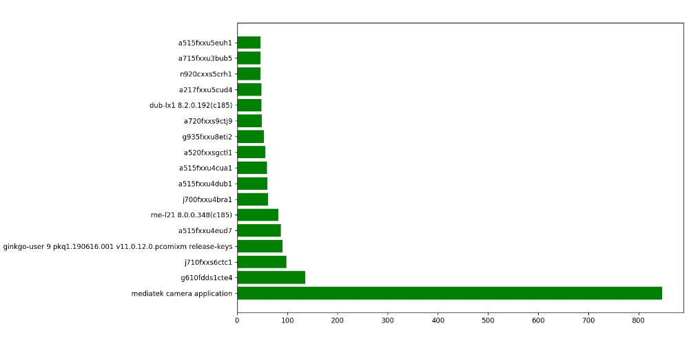
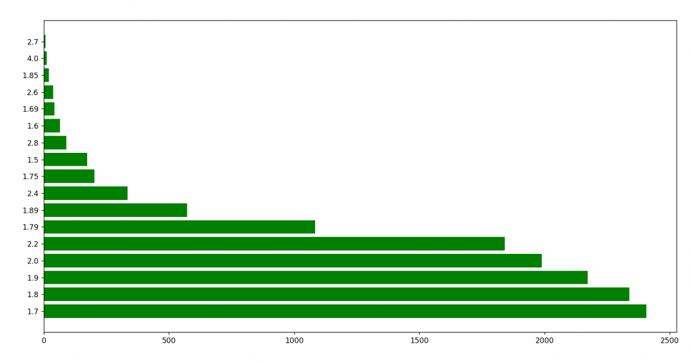
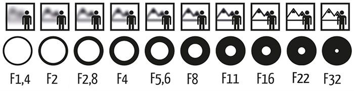
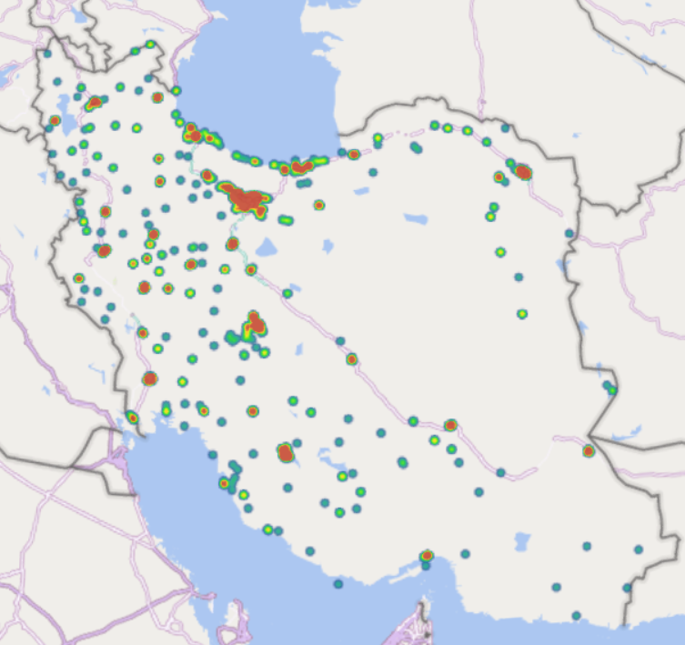

اول ببینیم EXIF یعنی چی؟
کلمه EXIF مخفف عبارت «Exchangeable Image File» به معنای «فایل تصویری قابل تبادل» است. هر تصویری که با دوربین دیجیتال یا دوربین تلفن همراه خود میگیرید، به عنوان یک فایل (که عموما پسوند JPG دارد) در حافظهی دستگاه شما ثبت میشود. این تصاویر، در کنار خود تصویر اصلی، اطلاعات زیاد دیگری را نیز ذخیره میکنند. این اطلاعات شامل تاریخ، زمان، تنظیمات دوربین و حتی گاهی اوقات اطلاعات مربوط به کپی رایت میشود. همچنین با استفاده از نرمافزارهای پردازش تصویر، قادر به اضافه کردن اطلاعات بیشتری به EXIF خواهید بود.
منبع : https://blog.faradars.org/exif-data-on-image-files
داستان از توییت زیر شروع شد :

واکنش من؟!
من تعداد ۴۸۱۰۶ تصویر رو از کامنت های دیجیکالا جمعآوری کردم تا بررسی کنم این موضوع تا چه حد صحت داره و چند درصد از تصاویر EXIF دارند. حجم این تصاویر هم ۸۰ گیگابایت شد! برای مشاهده اطلاعات EXIF یک تصویر میتونید از سایت زیر استفاده کنید :
لینک تصاویر در کامنت های دیجیکالا به صورت زیره :
اگر تصویر لینک بالا رو ذخیره کنیم و با سایت بالا اون رو بررسی کنیم میبینیم که تصویر شامل اطلاعات خاصی نیست. در واقع دیجیکالا تصویر با کیفیت اصلی رو در قسمت کامنت ها نمایش نمیده. حالا اگر قسمتی که در لینک بالا Bold کردم رو حذف کنید، میتونید تصویر با کیفیت اصلی رو دانلود کنید. یعنی دقیقا تصویری که کاربر آپلود کرده. اختلاف حجمشون خیلی زیاده. به طوری که حجم تصویر فشرده شده که دیجیکالا در کامنت ها نشون میده ۱۱۱ کیلوبایته و حجم تصویر اصلی ۷ مگابایت! دلیل اینکه حجم تصاویری که ذخیره کردم ۸۰ گیگ شده برای همینه! حالا اگر این تصویر رو در سایت بالا آپلود کنید میبینید که کلی اطلاعات از مشخصات دوربین داخلش ذخیره شده! البته الان دیجیکالا مشکل رو حل کرده و EXIF تصاویر رو حذف کرده!
حالا میخوام یه تحلیلی روی تصاویری که ذخیره کردم داشته باشم و ببینیم چه اطلاعاتی در تصاویر ذخیره شده!
از بین ۴۸۱۰۶ تصویر، تعداد ۱۴۹۳۶ تصویر (یعنی حدودا ۳۱ درصد تصاویر) EXIF داشتند. تصویر زیر، نمودار توزیع تعداد EXIF های تصاویر رو نشون میده :

بیشترین تعداد EXIF برای یک تصویر ۶۲ عدد و کمترین تعداد اون هم ۱ عدده. به طور میانگین هر تصویر ۳۸ عدد تگ EXIF داره. من همه تگ های EXIF رو نمیخوام تحلیل کنم و واقعا هم بعضی از تگ های خیلی به درد بخور و جالب نیست. در ادامه این تگ ها رو بررسی میکنم.
این تگ برند گوشی رو نشون میده. تعداد ۱۳۹۸۳ تصویر این تگ رو داشتند. نمودار زیر تعداد تصاویر که با هر برند گوشی گرفته شده رو نشون میده :

همونطور که میبینید بیشترین تعداد تصویر مربوط به برند سامسونگ میشه! لیست کامل رو در لینک زیر قرار دادم :
این تگ مدل گوشی رو نشون میده.تعداد ۱۳۹۸۳ تصویر این تگ رو داشتند. نمودار زیر تعداد تصاویر که با هر مدل گوشی گرفته شده رو نشون میده :

لیست کامل رو در لینک زیر قرار دادم :
رتبه های اول تا چهارم برای گوشی های زیره :
این تگ نام و ورژن software یا firmware دوربینی که با استفاده از اون تصویر گرفته شده رو نشون میده. تعداد ۱۱۶۷۴ تصویر این تگ رو داشتند. نمودار زیر تعداد تصاویر که با هر software گرفته شده رو نشون میده :

لیست کامل رو در لینک زیر قرار دادم :
این تگ اندازهی دیافراگم دوربین رو نشون میده. تعداد ۱۳۴۲۱ تصویر این تگ رو داشتند. نمودار زیر تعداد تصاویر هر F-Number رو نشون میده :

اگر میخواید اطلاعات بیشتری در مورد اندازه دیافراگم دوربین ها داشته باشید مطلب زیر رو بخونید :
اما به طور خلاصه در تصویر زیر میتونید تاثیر اندازهی دیافراگم بر عمق میدان رو مشاهده کنید :

لیست کامل رو هم در لینک زیر قرار دادم :
تگ های دیگهای هم مثل مدت زمان نوردهی، سرعت شاتر، میزان روشنایی و … هم وجود داشت ولی به نظرم خیلی جالب نبود.
این تگ مختصات مکانی تصویر رو نشون میده. اصلا دلیل نگارش این پست همین بود! از بین ۴۸۱۰۶ تصویر، تعداد ۲۲۹۸ تصویر مختصات مکانی داشتند که در نقشه زیر میتونید نقشه حرارتی این نقاط رو مشاهده کنید :

الان دیگه تصاویر در کامنت های دیجیکالا تگ GPS ندارند ولی کلا حواستون به تصاویری که به اشتراک میذارید بیشتر باشه! ساده ترین کاری که میتونید انجام بدید اینه که توی تنظیمات دوربین، GPS رو غیر فعال کنید. آموزش اینکار رو از لینک زیر میتونید بخونید :
nb.neighbours()
| title | date | |
|---|---|---|
| prev | فرادرس زیر ذرهبین! | ۱۴۰۱/۰۵ |
| next | تبلیغات تلویزیون زیر ذرهبین! | ۱۴۰۱/۰۷ |
{kind=link}